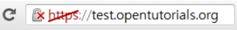

Nowadays, with the development of communication technology, a lot of people are shopping or banking that require users’ personal information on many websites. According to that, however, people are exposed to the risk of their personal information being leaked. I will cover how this can happen and how we can prevent this in the following paragraphs.
While searching for the SSL, I watched a post with a youtube video titled “the danger of accessing free Wi-Fi”. In this video, one Youtuber makes a hotspot in a crowded place and is waiting for people to access the hotspot. Of course, he makes the network name plausible, that is “Free_Wifi”. For watching the record of hotspot access, he installs “Wireshark” and runs. In just a few minutes, many people access and the Youtuber could check the people’s access information. He could check which site people accessed. Especially, if people access the login form by ‘HTTP://’, the Youtuber can find out people’s ID and password as shown in the picture below. If the information was your credit card number and password, you would be in danger of a hacker using your card.
On the other hand, in the case of ‘HTTPS://’, he could not see the ID and password like the picture below.Now you must have felt the need for communication security. From now on, I will explain this.
First of all, let’s find out what SSL is and HTTPS. SSL stands for Secure Sockets Layer and, in short, it's the standard technology for keeping an internet connection secure and safeguarding any sensitive data that is being sent between two systems, preventing criminals from reading and modifying any information transferred, including potential personal details. Also, HTTPS (Hyper Text Transfer Protocol Secure) appears in the URL when a website is secured by an SSL certificate. If you search the SSL, you can see a TLS. TLS (Transport Layer Security) is just an updated, more secure, version of SSL. In other words, if some site URL starts HTTPS, it means that the site is secure because the site is secured by SSL certificate. SSL certificate plays a role in ensuring the site is secured properly. Some official companies can issue the SSL certificate. We call this company SSL Certificate Authority. Symantec is representative.
I mentioned that the Youtuber could not see any information. Like this, the meaning to be secured is that someone can not check my information. For this, SSL encrypts data, which makes it impossible to know what data was exchanged. In addition, CA(certificate authority) ensures SSL works properly. Browser checks if the server is certificated by the official CA. If the server is not certificated by CA, the browser outputs the following warning.
In summary, we have to know that if we do not care about our security, our information can be exposed easily. To avoid this, we should always pay attention to keep our information by using SSL.